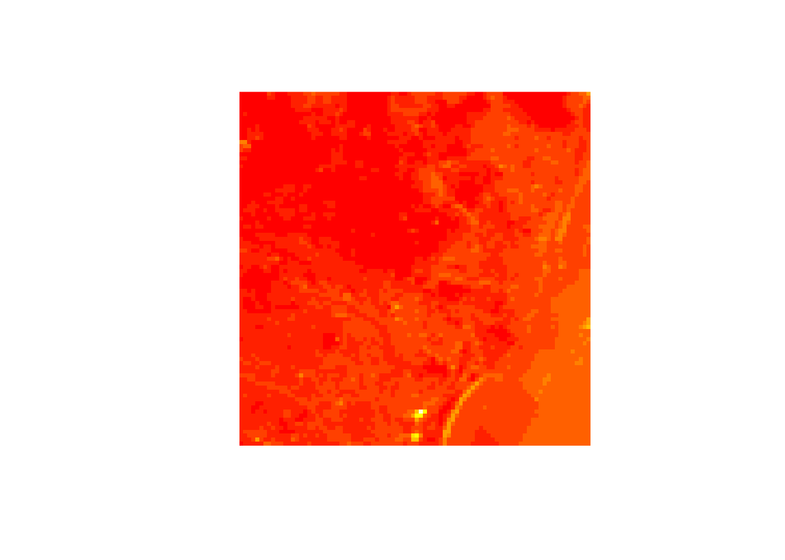
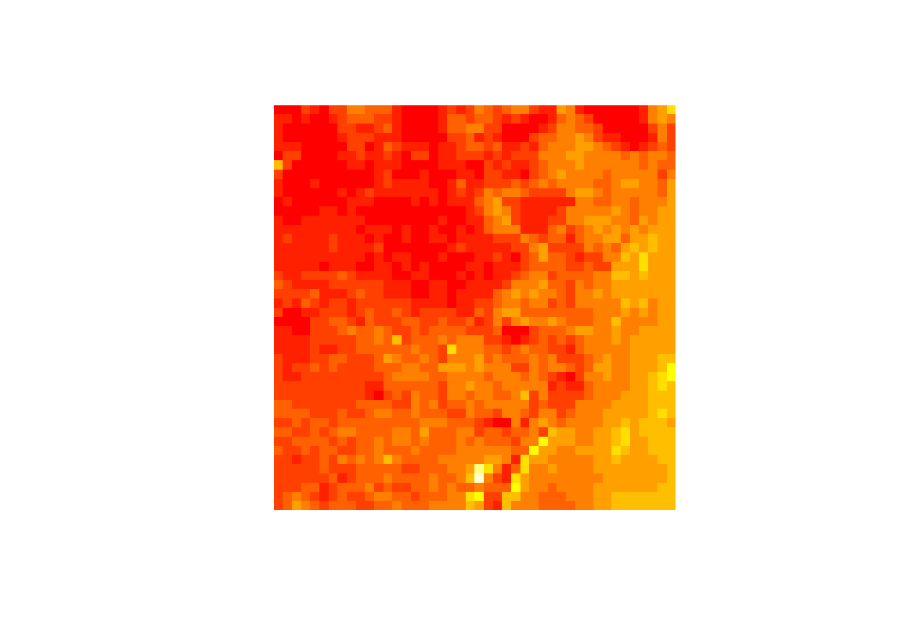
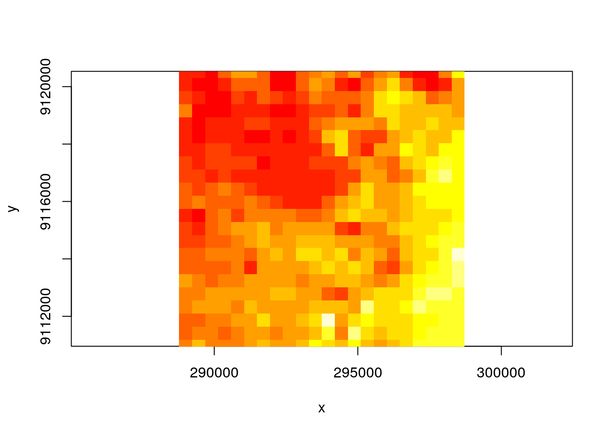
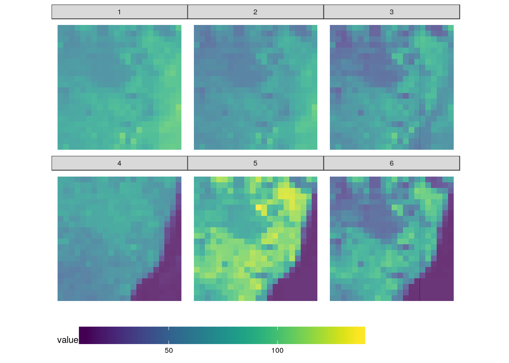
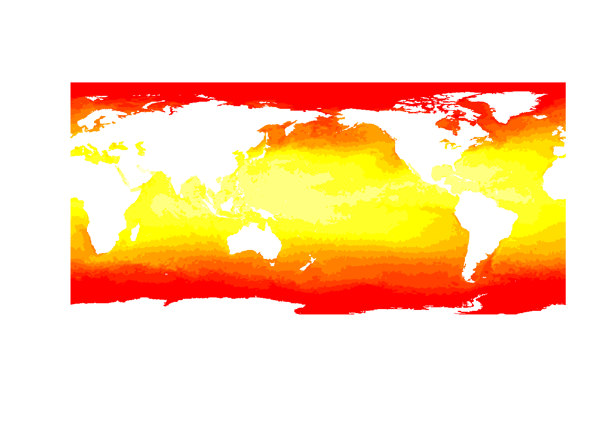
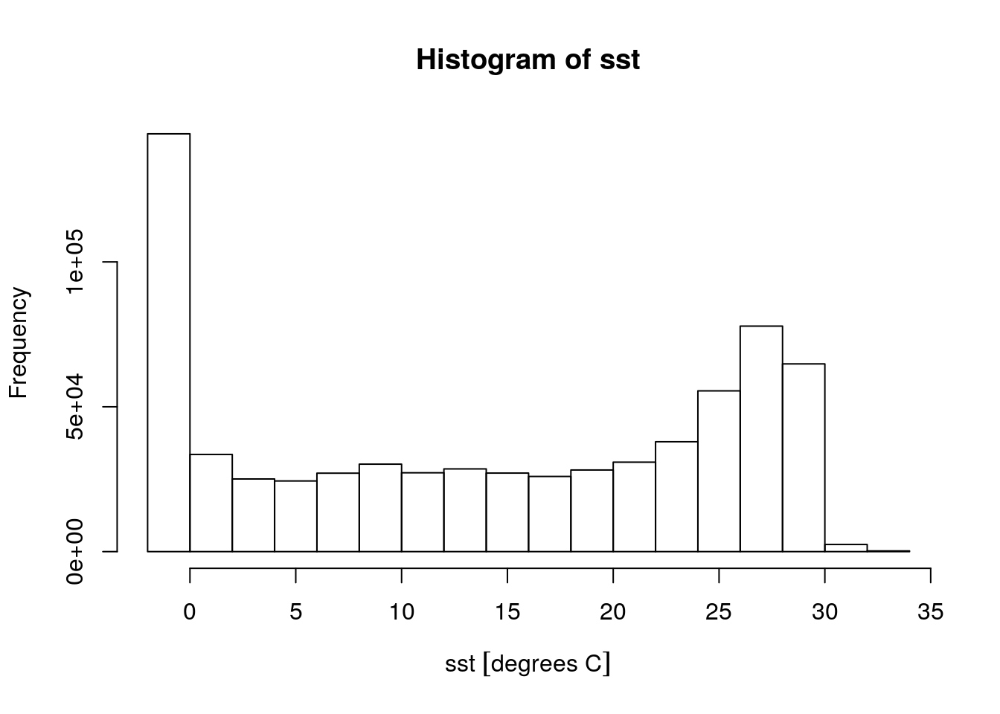

spatiotemporal tidy arrays for R; first steps
Edzer Pebesma
library(stars)
## Loading required package: dplyr
##
## Attaching package: 'dplyr'
## The following objects are masked from 'package:stats':
##
## filter, lag
## The following objects are masked from 'package:base':
##
## intersect, setdiff, setequal, union
## Loading required package: magrittr
## Loading required package: sf
## Linking to GEOS 3.5.1, GDAL 2.1.2, proj.4 4.9.3
## Linking to GDAL 2.1.2Landsat image: GeoTIFF
tif = system.file("tif/L7_ETMs.tif", package = "stars")
x = st_stars(tif)
str(x)
## List of 1
## $ /home/edzer/R/x86_64-pc-linux-gnu-library/3.4/stars/tif/L7_ETMs.tif: num [1:349, 1:352, 1:6] 69 69 63 60 61 61 62 60 64 63 ...
## - attr(*, "dimensions")=List of 3
## ..$ x :List of 8
## .. ..$ from : num 1
## .. ..$ to : num 349
## .. ..$ offset : num 288776
## .. ..$ delta : num 28.5
## .. ..$ geotransform: num [1:6] 2.89e+05 2.85e+01 0.00 9.12e+06 0.00 ...
## .. ..$ refsys : chr "+proj=utm +zone=25 +south +ellps=GRS80 +towgs84=0,0,0,0,0,0,0 +units=m +no_defs "
## .. ..$ point : logi FALSE
## .. ..$ values : NULL
## .. ..- attr(*, "class")= chr "dimension"
## ..$ y :List of 8
## .. ..$ from : num 1
## .. ..$ to : num 352
## .. ..$ offset : num 9120761
## .. ..$ delta : num -28.5
## .. ..$ geotransform: num [1:6] 2.89e+05 2.85e+01 0.00 9.12e+06 0.00 ...
## .. ..$ refsys : chr "+proj=utm +zone=25 +south +ellps=GRS80 +towgs84=0,0,0,0,0,0,0 +units=m +no_defs "
## .. ..$ point : logi FALSE
## .. ..$ values : NULL
## .. ..- attr(*, "class")= chr "dimension"
## ..$ band:List of 8
## .. ..$ from : num 1
## .. ..$ to : Named int 6
## .. .. ..- attr(*, "names")= chr "band"
## .. ..$ offset : num NA
## .. ..$ delta : num NA
## .. ..$ geotransform: num [1:6] NA NA NA NA NA NA
## .. ..$ refsys : chr NA
## .. ..$ point : logi NA
## .. ..$ values : NULL
## .. ..- attr(*, "class")= chr "dimension"
## ..- attr(*, "class")= chr "dimensions"
## - attr(*, "class")= chr "stars"
x
## stars object with 3 dimensions and 1 attribute
## attribute(s), of first 1e+05 cells:
## /home/edzer/R/x86_64-pc-linux-gnu-library/3.4/stars/tif/L7_ETMs.tif
## Min. : 47.00
## 1st Qu.: 65.00
## Median : 76.00
## Mean : 77.34
## 3rd Qu.: 87.00
## Max. :255.00
## dimension(s):
## from to offset delta
## x 1 349 288776 28.5
## y 1 352 9120761 -28.5
## band 1 6 NA NA
## refsys
## x +proj=utm +zone=25 +south +ellps=GRS80 +towgs84=0,0,0,0,0,0,0 +units=m +no_defs
## y +proj=utm +zone=25 +south +ellps=GRS80 +towgs84=0,0,0,0,0,0,0 +units=m +no_defs
## band NA
## point values
## x FALSE NULL
## y FALSE NULL
## band NA NULLOverviews
We can read rasters at a lower resolution when they contain so-called overviews. For this GeoTIFF file, the were created with the gdaladdo utility, in particular
gdaladdo -r average L7_ETMs.tif 2 4 8 16which adds course resolution versions by averaging blocks of pixels.
(x = st_stars(tif, options = c("OVERVIEW_LEVEL=1")))
## stars object with 3 dimensions and 1 attribute
## attribute(s):
## /home/edzer/R/x86_64-pc-linux-gnu-library/3.4/stars/tif/L7_ETMs.tif
## Min. : 11
## 1st Qu.: 57
## Median : 70
## Mean : 69
## 3rd Qu.: 84
## Max. :209
## dimension(s):
## from to offset delta
## x 1 88 288776 113.028
## y 1 88 9120761 -114
## band 1 6 NA NA
## refsys
## x +proj=utm +zone=25 +south +ellps=GRS80 +towgs84=0,0,0,0,0,0,0 +units=m +no_defs
## y +proj=utm +zone=25 +south +ellps=GRS80 +towgs84=0,0,0,0,0,0,0 +units=m +no_defs
## band NA
## point values
## x FALSE NULL
## y FALSE NULL
## band NA NULL
image(x)
(x = st_stars(tif, options = c("OVERVIEW_LEVEL=2")))
## stars object with 3 dimensions and 1 attribute
## attribute(s):
## /home/edzer/R/x86_64-pc-linux-gnu-library/3.4/stars/tif/L7_ETMs.tif
## Min. : 11.00
## 1st Qu.: 58.00
## Median : 71.00
## Mean : 69.12
## 3rd Qu.: 84.00
## Max. :152.00
## dimension(s):
## from to offset delta
## x 1 44 288776 226.057
## y 1 44 9120761 -228
## band 1 6 NA NA
## refsys
## x +proj=utm +zone=25 +south +ellps=GRS80 +towgs84=0,0,0,0,0,0,0 +units=m +no_defs
## y +proj=utm +zone=25 +south +ellps=GRS80 +towgs84=0,0,0,0,0,0,0 +units=m +no_defs
## band NA
## point values
## x FALSE NULL
## y FALSE NULL
## band NA NULL
image(x)
(x = st_stars(tif, options = c("OVERVIEW_LEVEL=3")))
## stars object with 3 dimensions and 1 attribute
## attribute(s):
## /home/edzer/R/x86_64-pc-linux-gnu-library/3.4/stars/tif/L7_ETMs.tif
## Min. : 12.00
## 1st Qu.: 58.00
## Median : 71.00
## Mean : 69.24
## 3rd Qu.: 83.00
## Max. :137.00
## dimension(s):
## from to offset delta
## x 1 22 288776 452.114
## y 1 22 9120761 -456
## band 1 6 NA NA
## refsys
## x +proj=utm +zone=25 +south +ellps=GRS80 +towgs84=0,0,0,0,0,0,0 +units=m +no_defs
## y +proj=utm +zone=25 +south +ellps=GRS80 +towgs84=0,0,0,0,0,0,0 +units=m +no_defs
## band NA
## point values
## x FALSE NULL
## y FALSE NULL
## band NA NULL
image(x)
TODO: aspect ratio, title, values along x and y axis, degree symbols
as.data.frame
names(x) = "value"
df = as.data.frame(x)
library(ggplot2)
library(viridis)
## Loading required package: viridisLite
library(ggthemes)
ggplot() +
geom_tile(data=df, aes(x=x, y=y, fill=value), alpha=0.8) +
facet_wrap("band") +
scale_fill_viridis() +
coord_equal() +
theme_map() +
theme(legend.position="bottom") +
theme(legend.key.width=unit(2, "cm"))
aperm
change (permute) dimension order:
aperm(x, c(1,3,2))
## stars object with 3 dimensions and 1 attribute
## attribute(s):
## value
## Min. : 12.00
## 1st Qu.: 58.00
## Median : 71.00
## Mean : 69.24
## 3rd Qu.: 83.00
## Max. :137.00
## dimension(s):
## from to offset delta
## x 1 22 288776 452.114
## band 1 6 NA NA
## y 1 22 9120761 -456
## refsys
## x +proj=utm +zone=25 +south +ellps=GRS80 +towgs84=0,0,0,0,0,0,0 +units=m +no_defs
## band NA
## y +proj=utm +zone=25 +south +ellps=GRS80 +towgs84=0,0,0,0,0,0,0 +units=m +no_defs
## point values
## x FALSE NULL
## band NA NULL
## y FALSE NULL
aperm(x, c("band", "x", "y"))
## $x
## [1] 1 2 3 4 5 6 7 8 9 10 11 12 13 14 15 16 17 18 19 20 21 22
##
## $y
## [1] 1 2 3 4 5 6 7 8 9 10 11 12 13 14 15 16 17 18 19 20 21 22
##
## $band
## [1] 1 2 3 4 5 6
## stars object with 3 dimensions and 1 attribute
## attribute(s):
## value
## Min. : 12.00
## 1st Qu.: 58.00
## Median : 71.00
## Mean : 69.24
## 3rd Qu.: 83.00
## Max. :137.00
## dimension(s):
## from to offset delta
## band 1 6 NA NA
## x 1 22 288776 452.114
## y 1 22 9120761 -456
## refsys
## band NA
## x +proj=utm +zone=25 +south +ellps=GRS80 +towgs84=0,0,0,0,0,0,0 +units=m +no_defs
## y +proj=utm +zone=25 +south +ellps=GRS80 +towgs84=0,0,0,0,0,0,0 +units=m +no_defs
## point values
## band NA NULL
## x FALSE NULL
## y FALSE NULLsingle NetCDF
The AVHRR Sea surface temperature file was downloaded from ftp://eclipse.ncdc.noaa.gov/pub/OI-daily-v2/NetCDF-uncompress/1981/AVHRR/avhrr-only-v2.19810901.nc
nc = system.file("nc/avhrr-only-v2.19810901.nc", package = "stars")
(x = st_stars(nc))
## sst, anom, err, ice,
## stars object with 4 dimensions and 4 attributes
## attribute(s), of first 1e+05 cells:
## sst [degrees C] anom [degrees C] err [degrees C] ice [percentage]
## Min. :-1.80 Min. :-4.69 Min. :0.110 Min. :0.010
## 1st Qu.:-1.19 1st Qu.:-0.06 1st Qu.:0.300 1st Qu.:0.730
## Median :-1.05 Median : 0.52 Median :0.300 Median :0.830
## Mean :-0.32 Mean : 0.23 Mean :0.295 Mean :0.766
## 3rd Qu.:-0.20 3rd Qu.: 0.71 3rd Qu.:0.300 3rd Qu.:0.870
## Max. : 9.36 Max. : 3.70 Max. :0.480 Max. :1.000
## NA's :13360 NA's :13360 NA's :13360 NA's :27377
## dimension(s):
## from to offset delta refsys point values
## x 1 1440 0 0.25 NA NA NULL
## y 1 720 90 -0.25 NA NA NULL
## time 1 1 1981-09-01 NA POSIXct NA NULL
## zlev 1 1 0 meters NA NA NA NULL
image(x)
library(units)
sapply(x, function(u) as.character(units(u)))
## sst anom err ice
## "degrees C" "degrees C" "degrees C" "percentage"
sst = x[[1]]
hist(sst) # gives units, even if wrong
Raster with axes not aligned to N/E; conversion to sf
An example of a raster with rows and columns that are not aligned with E-W and N-S is the following:
geomatrix = system.file("tif/geomatrix.tif", package = "stars")
x = st_stars(geomatrix)
st_dimensions(x)
## from to offset delta geotransform
## x 1 20 1841002 1.5 1841000, 1.5, -5, 1144000, -5, -1.5
## y 1 20 1144003 -1.5 1841000, 1.5, -5, 1144000, -5, -1.5
## refsys point values
## x +proj=utm +zone=11 +datum=WGS84 +units=m +no_defs TRUE NULL
## y +proj=utm +zone=11 +datum=WGS84 +units=m +no_defs TRUE NULL
library(sf)
s = st_as_sf(x, as_points = FALSE)
par(cex.axis = .7) # font size axis tic labels
plot(s, axes =TRUE, main = "geomatrix.tif", graticule = TRUE)
conversion to/from raster:
TODO: single NetCDF with multiple time and multiple depths
TODO: conversion to and from raster